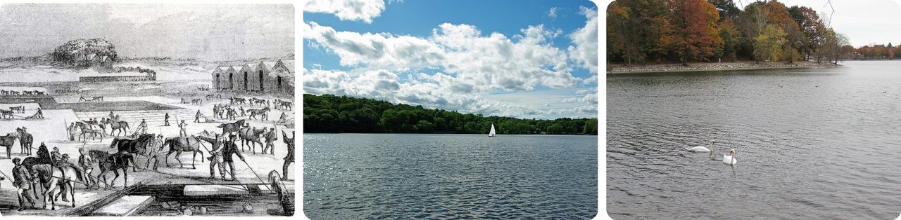
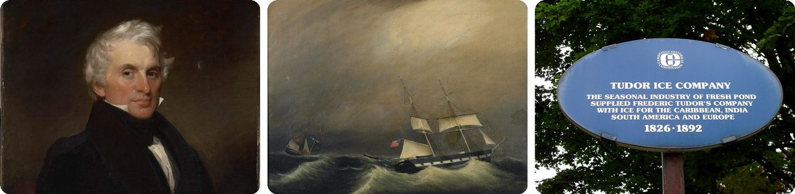
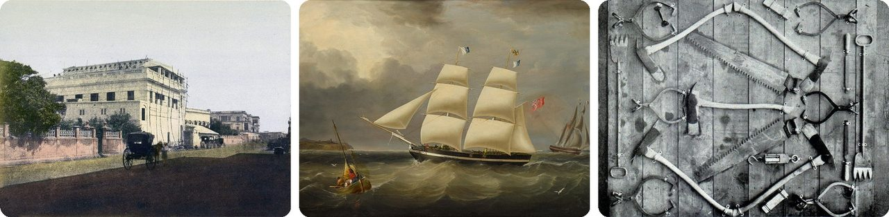
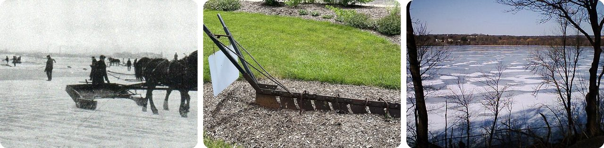
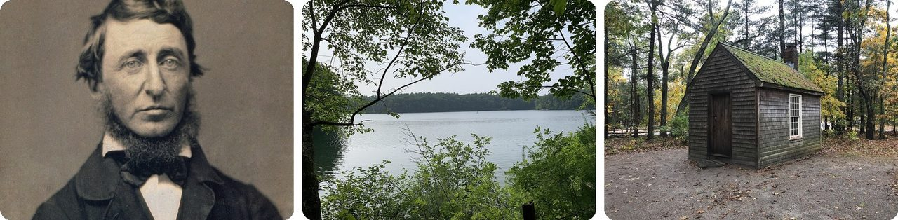
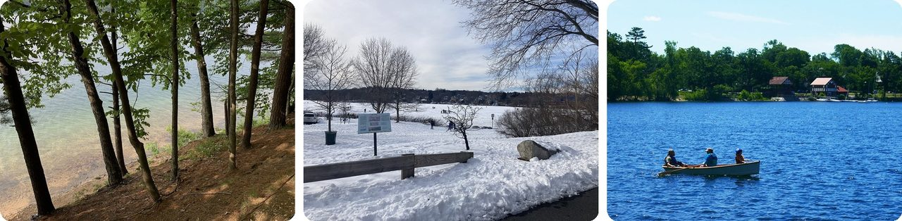
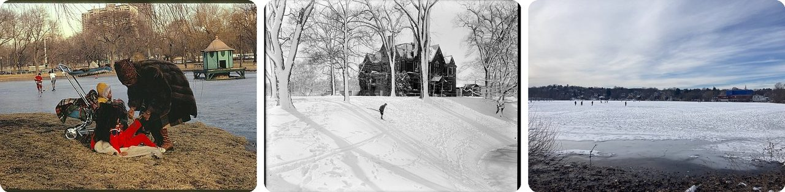
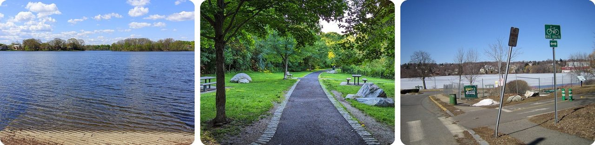
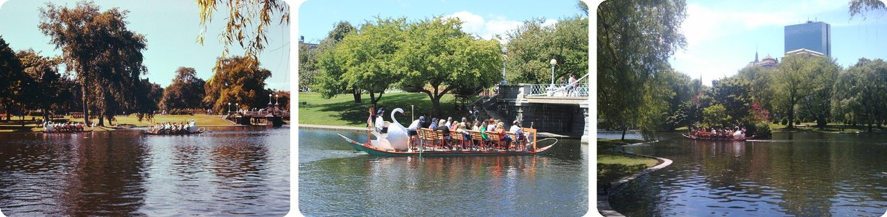
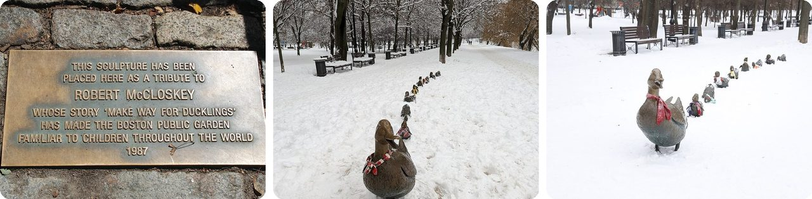

🌍 Top 10 Boston Lakes and Ponds
Oct 18, 2026
1. 🧊 Jamaica Pond was once a giant ice factory

Today Jamaica Pond, in Boston's Jamaica Plain neighborhood, is for walking, rowing and fishing. In the 1800s, it was a winter workplace. Every winter its frozen surface was cut into blocks and shipped to Boston and beyond.
In 1874 the Jamaica Plain Ice Company had 350 men on the ice, cutting as much as 5,000 tons in a single day. That's about the weight of 3,000 cars, pulled out of one pond.
Boston's pond ice went shockingly far: ships carried it to the Caribbean and all the way to India, as the next two entries show. And the pond's name is old too: it comes from a Native American name meaning "abundance of beavers."
Think of it as a freezer the size of a lake, emptied every winter.
2. 🌴 Boston's "Ice King" sent ice to the Caribbean, and people laughed

Frederic Tudor was 23 when he had a wild idea: sell New England ice in the hot Caribbean, where nobody had any. In 1806 he bought a ship and sent a load of ice 1,500 miles from Boston to the island of Martinique.
The idea sounded so silly that the Boston Gazette reported it with the words "No joke." But Tudor kept at it, and he became known as Boston's "Ice King."
His Tudor Ice Company became one of the first American businesses to sell around the world, and Fresh Pond in Cambridge was one of his main ice sources.
Basically, he sold snowballs to people who had never seen snow.
3. 🇮🇳 Boston ice survived a four-month voyage to India

In 1833, the ship Tuscany left Boston for Calcutta, India, with 180 tons of ice in its hold. The trip was about 16,000 miles and took four months.
The ice was packed with sawdust, wood shavings or rice husks to keep the heat out. When the ship reached India, many people there thought it was an elaborate joke, but 100 tons of ice were still solid.
Calcutta became Tudor's best customer for the next 20 years, and he built ice houses in Calcutta, Bombay and Madras to store it.
In other words, more than half of a Boston winter made it to India.
4. 🐴 A horse-pulled ice plow made the ice trade huge

At first, big blocks of ice were cut by hand, which was slow and held the business back. Then Nathaniel Wyeth, who supplied ice to Tudor from Fresh Pond in Cambridge, hitched horses to a metal blade and pulled it across the frozen pond to cut the ice.
His ice plow turned ice cutting into mass production. It let Tudor more than triple how much ice he could produce.
A horse-drawn railroad was even extended from the Fresh Pond ice houses to the Charlestown wharves, with its first shipment in December 1841. From there, Fresh Pond ice sailed to Europe, China and India.
So the ice trade went from hand tools to an assembly line, powered by horses.
5. 📖 Thoreau watched his Walden Pond turn into ice for India

In the 1840s, the writer Henry David Thoreau lived alone in a tiny cabin at Walden Pond in Concord, just outside Boston. One winter a big crew of men got off the train and spent sixteen days cutting ice right in front of him.
Thoreau knew Boston ice was shipped to India. So he wrote that people in hot Madras, Bombay and Calcutta would "drink at my well," and that "the pure Walden water is mingled with the sacred water of the Ganges," India's holy river.
Picture it: the same pond water Thoreau stared at all winter ended up in a glass halfway around the world.
It's the farthest a pond ever traveled.
6. 🏔️ Glaciers dug these ponds, which is why they're so deep

Fifty thousand years ago, the land around Boston was buried under ice a mile thick. When that glacier melted, starting about 15,000 years ago, it left giant chunks of ice behind, half-buried in the ground.
Those chunks slowly melted too, leaving deep, round holes that filled with water. These are called kettle holes, and Jamaica Pond, Walden Pond, Fresh Pond and Spy Pond are all kettle ponds.
That's why Jamaica Pond looks shallow near the shore but drops off steeply to 51 feet, about as deep as a five-story building is tall. Swimming there has been banned since the mid-1970s for that reason.
Think of it as a dent left by an ice cube the size of a hill.
7. ⛸️ 50,000 skaters had to rush off a cracking Jamaica Pond

Jamaica Pond used to host a huge winter skating carnival every year. In 1929, cracks suddenly appeared in the ice while it was packed with people.
Mayor James Curley cancelled the carnival, and 50,000 skaters had to be cleared off the pond. That's more people than fit in a sold-out Fenway Park.
Skating on Jamaica Pond isn't allowed anymore.
In other words, the world's scariest "everybody off the ice!"
8. 🌼 A woman picking dandelions at Spy Pond captured six British soldiers

Spy Pond is in Arlington, just northwest of Boston. On April 19, 1775, the first day of the American Revolutionary War, an older woman known as Mother Batherick was out gathering dandelions by the pond.
Six British soldiers, called Redcoats, came running by. They were fleeing after their supply wagons had been captured. Somehow, she rounded them up and took all six prisoner.
The pond's old name, "Spie Pond," goes back to the 1600s, long before that famous day.
It's the most successful dandelion-picking trip in history.
9. 🦢 Boston's Swan Boats are pedaled like bicycles

Since 1877, Swan Boats have floated on the pond in Boston's Public Garden. Their inventor, Robert Paget, got the idea after seeing an opera called Lohengrin, where a knight rides a swan across a lake.
Bicycles were the new craze, so Paget combined the two. A driver sits inside a big swan at the back and pedals, which turns paddles under the water. Passengers sit on benches in front.
The oldest boat still running was built in 1910, and a ride lasts about 12 to 15 minutes.
Basically, a bicycle disguised as a swan.
10. 🦆 Boston's famous ducklings have a twin family in Moscow

The 1941 picture book Make Way for Ducklings tells the story of a pair of mallard ducks raising their ducklings on a little island in the Public Garden's pond. It won the Caldecott Medal, a top award for picture books, in 1942.
In 1987, sculptor Nancy Schön made bronze statues of Mrs. Mallard and her eight ducklings for the Public Garden, and they're now a favorite stop for kids and grown-ups.
In 1991, First Lady Barbara Bush gave a copy to Raisa Gorbachev, the wife of the Soviet leader, as a gift to the children of the Soviet Union. That duck family now lives in a park in Moscow.
The ducks from a Boston pond became a peace present.
Fun fact
Boston's water today comes from the Quabbin Reservoir, 65 miles to the west, and making it meant wiping four towns off the map. In April 1938, Dana, Enfield, Greenwich and Prescott were officially shut down, about 2,500 people moved away, and the valley was flooded. The old hilltops now poke out of the water as islands. Next time: towns and villages that disappeared under lakes.
Photo credits (Wikimedia Commons)
- #1: Ice Harvesting, Massachusetts, early 1850s.jpg by AnonymousUnknown author, Public domain
- #1: Jamaica Pond 1.jpg by Bostonian13, CC BY-SA 3.0
- #1: Jamaica Pond IMG 0347.jpg by NewtonCourt, CC BY-SA 4.0
- #2: Francis Alexander - Frederic Tudor - 67.1160 - Museum of Fine Arts.jpg by Francis Alexander, Public domain
- #2: Clement Drew - The Brig Sarah Abigail of Boston in stormy Seas.jpg by Clement Drew, Public domain
- #2: Tudor Ice Company - Historical Marker, Cambridge, Mass.JPG by Daderot, CC BY-SA 3.0
- #3: The Ice House Calcutta by Frederick Fiebig 1851.jpg by Frederick Fiebig, Public domain
- #3: Joseph Heard - The merchant brig Bonanza off the coast (1838).jpg by Joseph Heard, Public domain
- #3: NSRW Ice Harvesting - tools.jpg by Brown Bros., Public domain
- #4: NSRW Ice Harvesting - ice plow.jpg by Brown Bros., Public domain
- #4: Diamond Lake ice cutter.jpg by SeymourHolcomb, CC0
- #4: Fresh Pond, Cambridge, MA 08.jpg by CaribDigita, Public domain
- #5: Benjamin D. Maxham - Henry David Thoreau - Restored.jpg by Benjamin D. Maxham active 1848 - 1858, Public domain
- #5: Walden Pond outlook.jpg by Erik Granlund, CC BY-SA 4.0
- #5: Replica of Thoreau House at Walden Pond, Concord MA.jpg by John Phelan, CC BY 4.0
- #6: Walden Pond lakeside.jpg by Erik Granlund, CC BY-SA 4.0
- #6: Spy Pond Feb 2021 (1).jpg by Peacearth, CC BY-SA 4.0
- #6: Jamaica Pond P1030864b.jpg by NewtonCourt, CC BY-SA 4.0
- #7: Ice skating inner city at Public Garden - DPLA - ecba8efdfaddd03f3b4dc9f4df6df9ed.jpg by Halberstadt, Ernst, 1910-1987, Public domain
- #7: 1932 JamaicaPond Boston2589573467.jpg by BPL, CC BY 2.0
- #7: Spy Pond Feb 2021 (3).jpg by Peacearth, CC BY-SA 4.0
- #8: Spy Pond - Arlington, MA - DSC01381.jpg by Daderot, CC0
- #8: Spy Pond pathway - Arlington, MA - 01.jpg by Daderot, CC0
- #8: Spy pond arlington massachusetts 050322.jpg by Pingswept, CC BY-SA 2.0
- #9: Swan boats on the Lagoon, Boston Public Garden, late 1950s.jpg by Donald A. Bailey, CC0
- #9: Boston Swan Boat Lagoon Bridge.jpg by Captain-tucker, CC BY-SA 3.0
- #9: Boston Public Garden Swan Boat.jpg by EgorovaSvetlana, CC BY-SA 4.0
- #10: Make Way for Ducklings Plaque Boston.JPG by Captain-tucker, CC BY-SA 3.0
- #10: Make Way for Ducklings in winter.jpg by Numbered, CC BY-SA 4.0
- #10: Памятник Дайте дорогу утятам!.jpg by Svklimkin, CC BY-SA 4.0


.jpg){kind=link}


.jpg){kind=link}


.jpg){kind=link}